Makie v0.21
We're happy to announce Makie's next minor version - v0.21!
Makie's community has been growing steadily over the last years, and we hope this new update will allow you all to create more and better visualizations than ever!
(Here's a small chart that reflects how Makie's usage is increasing, showing citations over time as indicated by google scholar alerts for our JOSS paper)
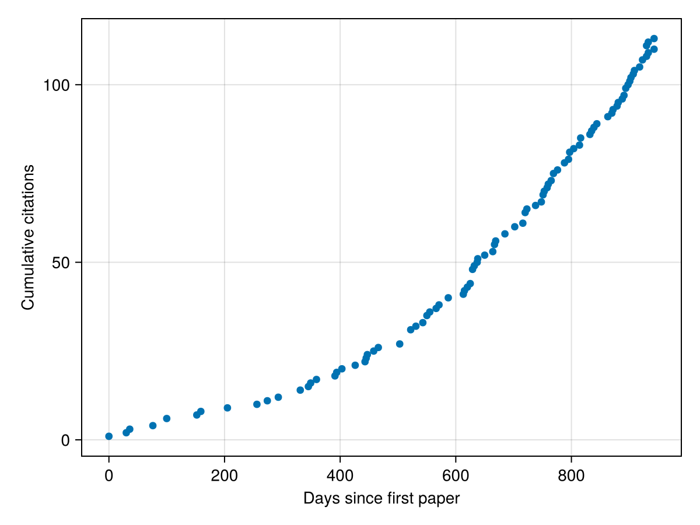
We're also excited to show off the redesign of our documentation using DocumenterVitepress.jl which improves overall clarity, benefits from new Documenter.jl features and has a better search functionality than our old custom Franklin.jl setup. We are determined to keep improving the documentation more and more, to really enable our users to tap into the vast range of features Makie offers today.
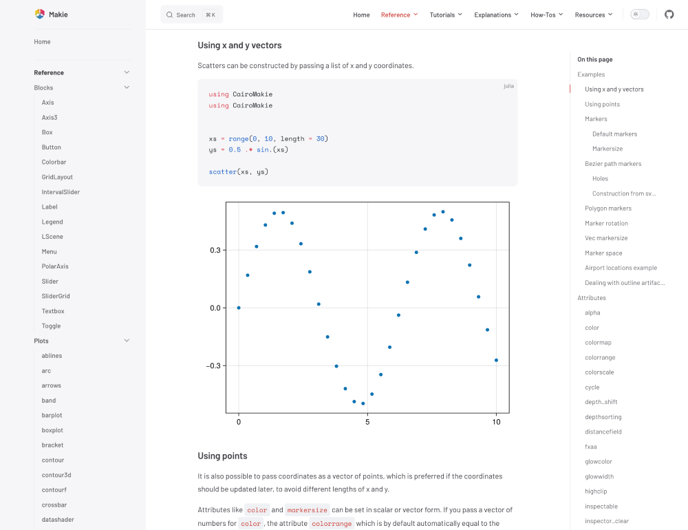
With that said, let's dive into the most important changes and additions in v0.21!
Unit and Categorical support
This feature has been requested countless times over the last years and has been finally implemented. It required a lot of work, due to Observables allowing anything to update dynamically at any time, the complex interaction of plot object creation with Axes and the feature itself being quite complex with lots of corner cases. But now, as of Makie 0.21, types like units, categorical values and dates are supported natively and we added an interface that can be extended for custom units.
Any type is converted to a plottable representation by the new
dim_converts function, which changes a dimension of the axis to a new unit space. Once the conversion is set for a dimension, it can't be changed anymore to prohibit mixing units in that dimension. This is implemented by the
Scene carrying a new
DimConversions object, which tracks the conversions for each dimension, which it forwards to the Plot and Axis objects. While this is a more complex approach, it guarantees that these conversions are really treated as new unit spaces for the axis, rather than just a recipe which changes axis tick labels.
The basic usage is as easy as replacing numbers with any supported type, e.g.
Dates.Second:
using CairoMakie, Makie.Dates
using Makie.Unitful
f, ax, pl = lines(Second(1):Second(60):Second(20*60), u"m" .* cumsum(randn(20)))
data = cumsum(randn(4, 100), dims=2)
barplot(f[1, 2], Categorical(["a", "b", "c"]), 1:3)
series(f[2, :], now() .+ Second.(1:100), data)
f
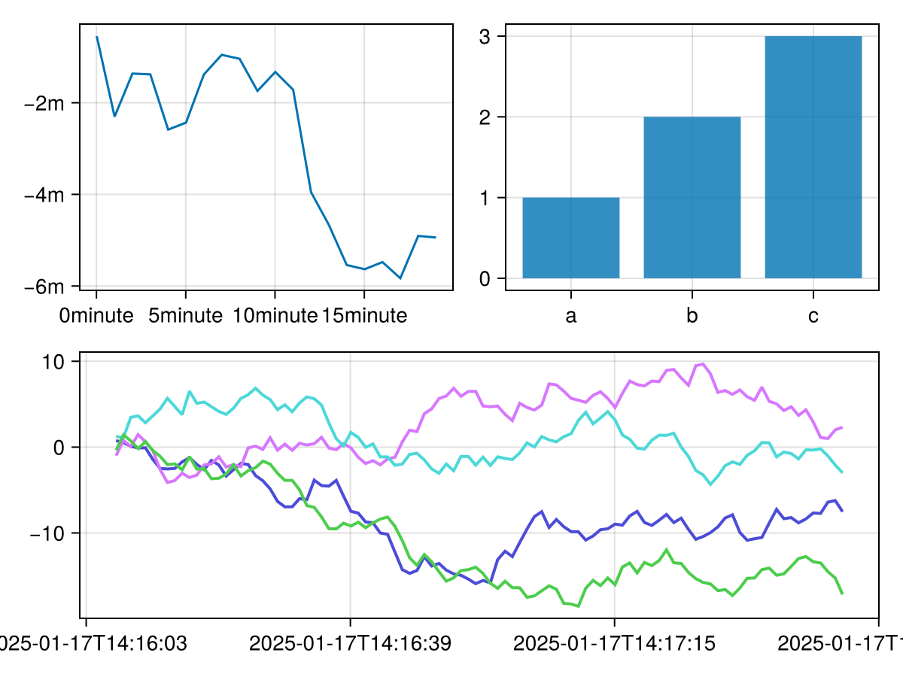
Integration with the conversion pipeline
One of the complications to implement dim converts was to enable
convert_arguments to be able to return units and also make it work with the new
SpecApi:
import Makie.SpecApi as S
struct DateStruct end
function Makie.convert_arguments(::PointBased, ::DateStruct)
return (1:5, DateTime.(1:5))
end
f, ax, pl = scatter(DateStruct())
bplot = S.BarPlot(Categorical(["a", "b", "c"]), 1:3; bar_labels=:y)
spec = S.GridLayout([S.Axis(; plots=[bplot])])
plot(f[1, 2], spec)
f
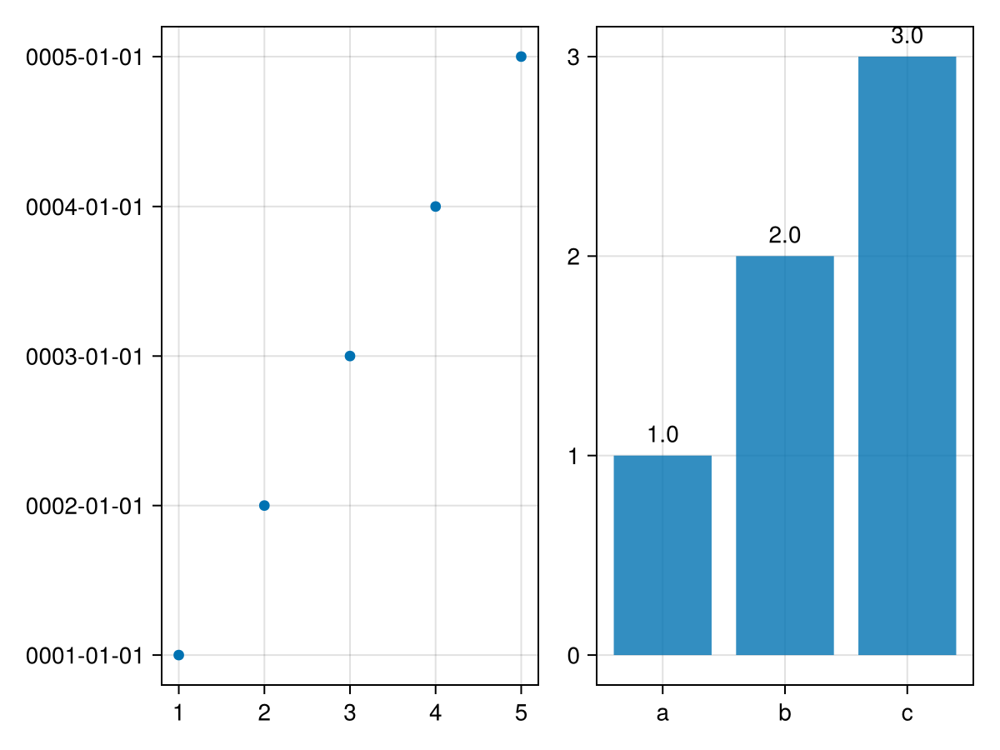
Current limitations
-
For now, dim conversions only works for vectors with supported types for the x and y arguments for the standard 2D Axis. It's setup to generalize to other Axis types, but the full integration hasn't been done yet.
-
Keywords like
direction=:yin e.g. Barplot will not propagate to the Axis correctly, since the first argument is currently always x and second always y. We're still trying to figure out how to solve this properly -
Categorical values need to be wrapped in
Categorical, since it's hard to find a good type that isn't ambiguous when defaulting to a categorical conversion. You can find a work around in the docs. -
Date Time ticks simply use
PlotUtils.optimize_datetime_tickswhich is also used by Plots.jl. It doesn't generate optimally readable ticks yet and can generate overlaps and goes out of axis bounds quickly. This will need more polish to create readable ticks as default. -
To properly apply dim conversions only when applicable, one needs to use the new undocumented
@recipemacro and define a conversion target type. This means user recipes only work if they pass through the arguments to any basic plotting type without conversion.
Plot Attribute Validation
One of Makie's biggest footguns has always been that you could pass arbitrary wrong keyword arguments to plotting functions without getting an error. For example, the following call would happily display a scatter plot, but not with the intended visual attributes - because none of them are defined for
Scatter:
scatter(x, y; colour = :red, marker_size = 3, stroke = :black)
It took a lot of work to remedy this situation, but we finally got it done. In v0.21, we have introduced a second internal variant of the
@recipe macro and rewritten all our recipes to use it. This variant allows to declare at compile time which attributes are valid for a given plotting function, and also documenting these attributes in-place. We can now throw a helpful error for the example above:
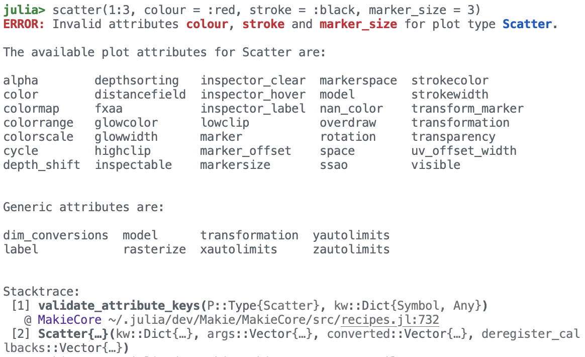
There are more improvements to be made in this area, but this refactor is a big step forward in making Makie more robust and user-friendly.
Warning!
Note that the new `@recipe` syntax is undocumented and considered internal for now. It could experience breaking changes in patch versions as we make further improvements to it. This also means that third party recipes written with the old `@recipe` syntax will continue to work as they are and not automatically receive the benefits of the new system.Now that we have solidified how we deal with plot attributes internally, we also want to improve their public-facing documentation. In the future, we want to have visual examples for each plot attribute of each plot, so that users can more easily navigate what options are available to them. Once this process starts, we hope to get the community involved, too. The amount of examples to be written is large but at the same time requires no deep understanding of the code base, so this could be a fun way to contribute and get your feet wet in open source development!
Voxel
With this new release we are adding a new (primitive) plot type -
voxels. A voxel is the 3D equivalent of a pixel, i.e. a small cube of a constant size placed into a regular 3D grid. Given those restrictions
voxels is generally much more efficient than
meshscatter(pos, marker = Rect3f(Point3f(-0.5), Vec3f(1)), markersize = 1, color = colors), both with respect to computational cost (i.e. geometry rendered) and memory usage (i.e. data transfered to the GPU). The plot type currently has a dedicated implementation in GLMakie and WGLMakie, though WGLMakie still has some rendering issues.
A
voxels plot takes an
Array{3} as an input and optionally three intervals to specify the range of the voxel grid. Here is an example using
voxels to show an isosurface by manipulating the visible colorrange:
using GLMakie; GLMakie.activate!()
r = range(-2pi, 2pi, length = 101)
func(x, y, z) = exp(cos(x)) / (1 + abs(sin(y))) * cos(0.25 * z)
chunk = [func(x, y, z) for x in r, y in r, z in r]
fig = Figure(figure_size = (400, 400))
ax = LScene(fig[1, 1])
voxels!(ax, -2..2, -2..2, -2..2, chunk, colorrange = (0.1, 0.2), lowclip = :transparent, highclip = :transparent)
fig
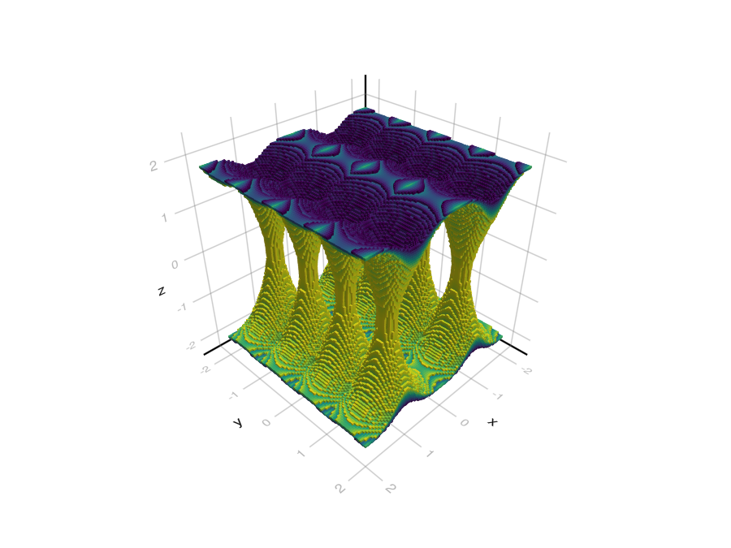
If you are interested in what's below the surface you can add transparency (via the
colormap or
alpha with
transparency = true) or reduce the size of voxels by setting
1 > gap > 0:
| transparency | gap |
|---|---|

|
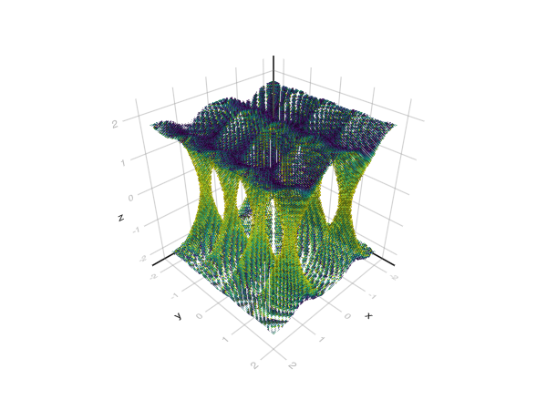 |
You can also render voxels with textures. Currently voxels are represented by
UInt8 with
0x00 strictly being an invisible air block. This leaves you with 255 voxel ids to map to textures. This is done by specifying a
uvmap as either a Vector
uvs[id] = uv::Vec4f or Matrix
uvs[id, side] = uv::Vec4f. Here is an example using https://www.kenney.nl/assets/voxel-pack:
using FileIO
# 9 wide, 10 tall
texture = FileIO.load(Makie.assetpath("voxel_spritesheet.png"))
uv_map = [
Vec4f(x, x+1/10, y, y+1/9)
for x in range(0.0, 1.0, length = 11)[1:end-1]
for y in range(0.0, 1.0, length = 10)[1:end-1]
]
# all air
chunk = fill(0x00, 64, 64, 32)
# fill with other block types
for x in axes(chunk, 1), y in axes(chunk, 2)
# fill columns bottom to top with stone, rocky dirt, dirt and grass
height = floor(Int, 15 + 8 * sin(0.1 * x) * cos(0.1 * y))
for z in 1:height
rock, rocky_dirt, dirt = 1.3 .* abs.(1 .- randn(3))
rock -= abs(height - 7 - z)
rocky_dirt -= abs(height - 4 - z)
dirt -= abs(height - 1 - z)
choice = if rock > rocky_dirt
rock > dirt ? UInt8(40) : UInt8(53)
else
rocky_dirt > dirt ? UInt8(7) : UInt8(53)
end
chunk[x, y, z] = choice
end
choice = randn() + 0.2 * (height - 15)
chunk[x, y, height+1] = choice > 0 ? UInt8(16) : UInt8(15) # light, dark grass
end
fig = Figure()
ax = LScene(fig[1, 1], show_axis = false)
voxels!(ax, chunk, uvmap = uv_map, color = texture)
# set camera position
cameracontrols(ax.scene).settings.center = false
update_cam!(ax.scene, Vec3f(35, 55, 10), Vec3f(2, 7, -9))
fig
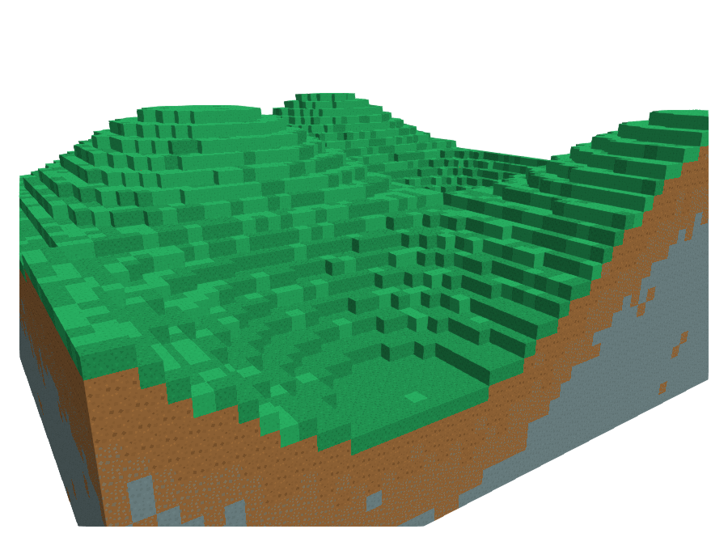
Lines
Internal/Backend changes
The line rendering code for GLMakie and WGLMakie has been reworked to bring both backends to the same standard. The major changes are that WGLMakie now renders line joints and supports linestyles. Here is a quick before and after:
| Before | After |
|---|---|
| 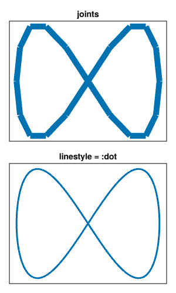 |

|
As part of this GLMakie had some changes to its colormap and color interpolation. It used to sample the colormap at line points and then interpolate the result to color the line. This can lead to unexpected colors appearing along a segment. Now GLMakie interpolates the
plot.color values and samples the actual colors from the colormap in the fragment shader. In some cases this change can be very obvious, e.g. in the example below. On the other hand, the color interpolation change (i.e.
plot.color::Vector{RGBAf}) is subtle. Rather than interpolating
plot.color on the triangles making up a line segment we now interpolate based on segment length. This cleans up the purple spike you can see in the top left segment in the example.
fig = Figure(size = (400, 400))
a, p = lines(
fig[1, 1], [-1, -1, 0, 0, 1, 1], [0, 1, 0.8, 0.25, 0, 1], linewidth = 40,
color = [0, 1, 0, 1, 0, 1],
colormap = [:red, :yellow, :blue]
)
hidedecorations!(a)
xlims!(a, -1.2, 1.2)
ylims!(a, -0.1, 1.15)
fig
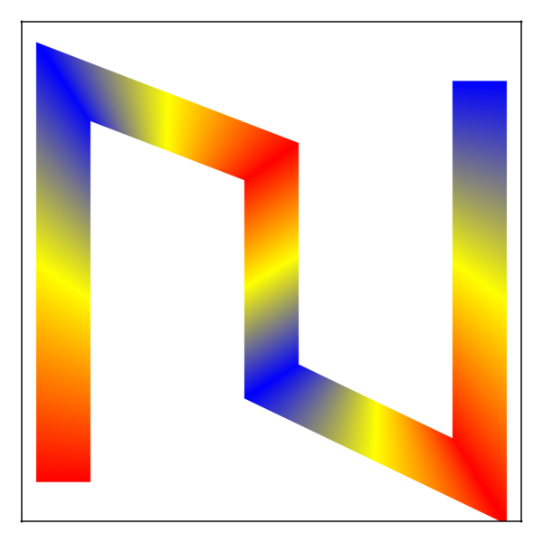
| Before | After | without yellow |
|---|---|---|
| 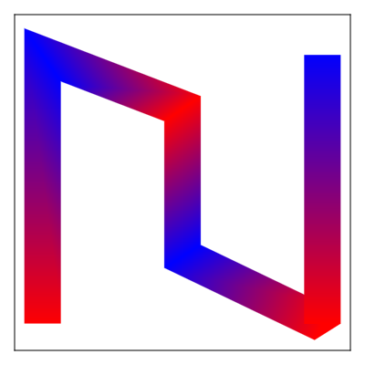 | 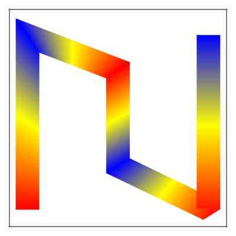 | 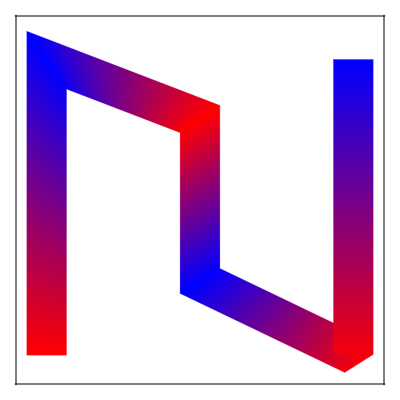 |
Tangentially to these changes we also fixed issue where lines would invert in a 3D LScene (i.e. with perspective projection) when zooming in too far.
Linecaps and joinstyles
We have added support for different line caps and join styles across CairoMakie, GLMakie and WGLMakie. Line caps can be set with the
linecap attribute for
lines and
linesegments to either
:butt (default),
:square or
:round. Join styles apply only to
lines and use the
joinstyle attribute which can be either
:miter,
:bevel or
:round.
joinstyle = :miter further depends on
miter_limit which sets the minimum corner angle below which
:bevel joints are used.
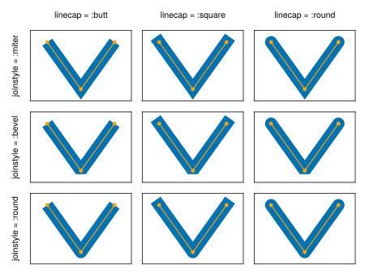
Float64 Precision in Axis
The first Makie backend was GLMakie, and because GPUs are much more efficient working in 32 bit floating point this influenced the early design of Makie to favor 32 bit precision in its conversion pipeline.
This resulted in some unfortunate limitations when plotting data which could not be resolved well enough in
Float32. For example, note how this line of scatter dots was quantized very visibly in Makie 0.20 because the values are close together relative to their magnitude:
data = 10_000 .+ range(0, 0.01, length = 50)
scatter(data)
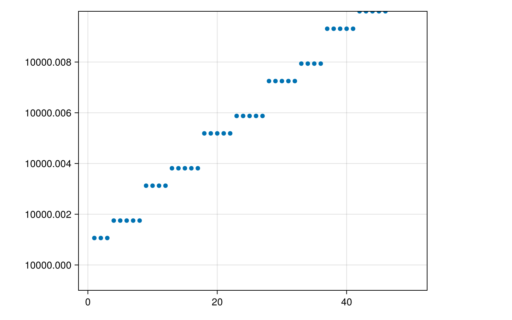
In Makie 0.21, an additional step was inserted in the conversion pipeline for
Axis which rescales data before handing it off to the backends in reduced precision, thereby mostly circumventing quantization problems. The same plot in Makie 0.21 shows a nice straight line and the limits are also not shifted incorrectly anymore:
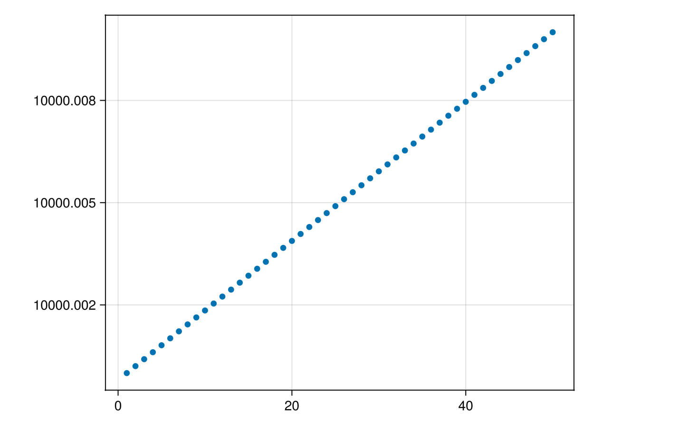
In a large amount of internal code, we could move from
Float32 by default to
Float64 which also removed some common sources of errors, for example if axis limits were too close together in
Float32. Supporting
Float64 precision also made it easier to implement support for
DateTime because typical timestamps suffer from quantization when converted to numbers as they become large numbers that are very close to each other.
For Developers
The changes should be mostly isolated from custom plot recipes and
convert_arguments() methods. You should be fine as long as you don't convert arguments to
Float32 types (e.g. use
Point2d or
Point2 over
Point2f). If you have a custom
data_limits() method you should follow the points outlined below. If you still have issues after this you can check
plot.input_args and
plot.converted (including for child plots in
plot.plots) to find out when/if a
Float32 conversion occurs.
If you are projecting data yourself and, for example, plot in
:pixel space things get a bit more complicated. To deal with Float64 precision we have added a linear transformation
scene.float32convert acting after
plot.model[] or before
Makie.patch_model(scene plot.model[]). This step is likely to be missing and will cause wrong results when the conversion takes effect. You currently have a few options:
-
Use
Makie.plot_to_screen(plot, data)which transforms a point of vector points fromplot.space[]to:pixelspace using the information contained in the given plot (or scene). -
Use
project(scene, input_space, output_space, point)to project between any two spaces. Note that you will need to handletransform_funcyourself here. -
Handle it yourself. If you can't use
plot_to_screen()(i.e. your target space is not:pixel) you will see better performance by adaptingplot_to_screen()than by usingproject()repeatedly. You can check "basic recipes/errorand rangebars.jl" and "camera/projectionmath.jl" for the definitions of these functions.
data_limits and boundingbox changes
As part of dealing with
Float32 precision issues we have updated the
data_limits and
boundingbox functions.
Previously
data_limits() considered
Mat3f(plot.model[]), i.e. rotation and scaling applied to a plot, while ignoring the plots transform
func and translation. With that the result is in an unnatural coordinate system.
boundingbox(x) was given by `parent
transform(x) * data
limits(x)`, where parenttransform is the model matrix of the parent plot or scene, with
boundingbox(p::Text) being an exception producing limits in
p.markerspace[].
After the changes
data_limits() is now strictly in input space, i.e. it applies no transformations. It is however allowed to consider the size of markers if the markers are in the same space as the user data. So for example,
meshscatter considers the size of the scattered mesh and
text considers the size of the string if
space[] == markerspace[].
boundingbox() on the other hand considers a full transformation to world space, i.e. it applies
transform_func(plot) and the full
plot.model[] matrix. For the future we have also added a (target)
space argument here which is largely ignored for now. The exception being
boundingbox(p::Text, space) which requires the argument to differentiate the new functionality (
space = :data) from the old (
space = p.markerspace[]).
For Developers
By default
boundingbox(plot) is derived from the
data_limits(plot) using
apply_transform(func, bbox::Rect3d), and
data_limits(plot) default to the combined limits of the child plots. This will usually be enough to calculate reasonable limits, but there are some edge cases which may need your attention:
-
If you a define a plot with child plots in different spaces, then you must implement
data_limits(plot)andboundingbox(plot, space = :data)to get the correct limits. Some examples of this are errorbars which use pixel space for whiskers, h/vlines which are partially in relative scale and voronoiplot which appliestransform_funcinternally. -
If you define a custom
transform_funcwhich does not correctly transform aRect3dby transforming its vertices, then you should implement aapply_transform(my_transform_func, bbox::Rect3d)method that does.
Breaking Changes
-
data_limits(plot)no longer considers part of the plots model matrix -
boundingbox(plot)now considers the plotstransform_funcand full model matrix -
boundingbox(p::Text)has been deprecated in favor ofboundingbox(p, p.markerspace[])withboundingbox(p, :data)following the newboundingbox()logic -
data_limits()andboundingbox()now returnRect{3, Float64}types -
project(cam, input_space, output_space, pos)is no longer save to use for plots in anAxis. Useproject(scene, input_space, output_space, pos)instead. -
deprecated
rotationsAttribute forrotationinscatterandmeshscatterplots (both were valid before) -
invalid attributes that were previously not checked will break